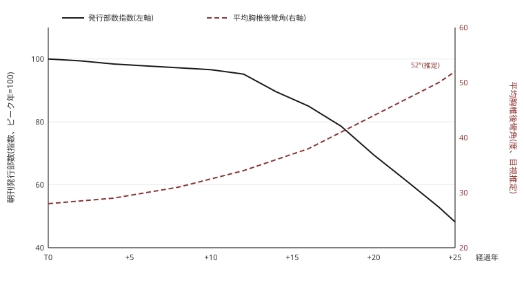

政治的老化
要旨
多くの社会において、老いは地位に先行する。東アフリカの年齢階梯制から日本企業の年功制に至るまで、長老制の研究が繰り返し確認してきたのは、暦年齢の蓄積と権威の蓄積との同型性である。本稿が報告するのは、この因果が逆転したひとつの社会である。すなわち、地位への接近が老いを生む社会。衰退期にある日本の全国紙X社編集局での十数年の参与観察に基づき、本稿は、編集局次長以上の職位への昇進者に観察される、暦年齢を大幅に超過した身体的老化――本稿はこれを「政治的老化(political senescence)」と呼ぶ――を記述し、その生成機序を消耗・選抜・擬態の三仮説の競合と複合として分析する。分析枠組みとしては、外的成長を失ったシステムが内部の複雑化へ向かう過程を指すインボリューション概念と、医療人類学における「三つの身体」論を採用する。結論は次の一文に要約される。魂は一括で売却され、身体は分割で支払う。
キーワード: 政治的老化、魂線、インボリューション、身体的ヘクシス、参与観察、新聞
1 序論――問題の所在
ある冬の朝、筆者は東京都心にある本社ビルのエレベーターで、一人の男と乗り合わせた。扉が閉まる。男は筆者に気づかないか、あるいは気づいた上で、気づかないという作法を選んでいる1。筆者の位置からは男の側面が見える。胸椎は前方へ深く彎曲し、頭部は肩の鉛直線から数センチ前方に突出している。白髪は染められていない。手にはスマートフォンではなく、四つ折りにされたA4の紙がある。内容は判読できないが、判読できる者には判読できる種類の紙である。人事データベースは、彼の暦年齢について、観察結果と両立しがたい数字を記載している。エレベーターが止まり、男は降りる。その歩行には、股関節可動域の明確な制限が観察される。筆者はこの朝の観察を、当夜フィールドノートに記録した。本稿は、このようなノートの十数年分の堆積から書かれている。
人類学は、老いが権威を生む社会を数多く記録してきた2。年齢が階梯を規定し、階梯が発言権を規定する。日本の企業組織における年功制も、この系譜の穏当な一変種として理解されてきた。ところが筆者のフィールドでは、矢印が逆を向いている。老いが地位をもたらすのではない。地位への接近が、老いをもたらすのである。編集局次長以上の職位にある者たちは、同年代の日本人男性の標準的身体と比較して、姿勢・毛髪・皮膚・歩行の各指標において系統的に「老いて」いた。彼らの多くは四十代後半から五十代である。彼らの身体は、それより二十年から三十年先を歩いている。
フィールドの概況を先に示す。X社は日本の全国紙であり、その朝刊発行部数は今世紀初頭にピークに達した3。以後、部数は一貫して減少し、ピーク年を100とする指数は、執筆時点で50前後まで低下している。四半世紀足らずで、外部世界が半分になった。この間、編集局の内部世界――会議体の数、根回しの階層、人事をめぐる語彙の細分化――は、筆者の観察する限り、精緻化の一途をたどった。ギアツがジャワの水田農業に見出したインボリューション、すなわち外的拡大の停止したシステムが内部の複雑化へと向かう過程4の、これは組織版である。本稿の中心的な主張は、この内旋の費用が、特定の階層の成員の身体に転嫁されている、というものである。
転嫁が始まる高度は特定できる。X社編集局の階層構造には、一本の不可視の線が走っている。その線以下では、魂の保持と昇進とが両立する。線以上では、原則として両立しない。本稿はこれを「魂線(soul line)」と呼ぶ。森林限界5がそれ以上の高度での樹木の直立を許さないのと同様に、魂線はそれ以上の職位での魂の直立を許さない。観察によれば、X社編集局において魂線は、非主流とされる部署の部長職と、編集局次長職とのあいだを通過している。非主流部署の部長までであれば、個体は魂を売却することなく到達しうる。それより上へ向かう経路は二つしかない。第一は、突出した能力または実績による通過である。本稿はこれを高度順応と呼び、対象から除外する。高度順応者は魂線の上でも呼吸ができる。少数だが、存在する。第二の経路が、社内政治である。本稿の対象は、この第二経路の通行者たちである。
本稿は、社内政治への長期従事に随伴する、暦年齢を大幅に超過した身体的老化を「政治的老化(political senescence)」と定義する6。その生成機序について、本稿は三つの仮説を立てる。第一に消耗説。政治労働――メモの作成、根回し、席次の計算、上申――そのものが身体を蝕むとする説。第二に選抜説。魂線以上の高度では、老いて見える身体が選好され、生き残るとする説。第三に擬態説。長老支配の身体規範への同化、すなわち上位者に似た身体をまとうことが忠誠の表示として機能するとする説。三仮説は排他的ではない。第五章で論じるように、政治的老化はおそらく、これらの複合過程である。
本稿の構成は以下の通りである。第二章で関連する先行研究を整理し、本研究の位置を確認する。第三章で調査方法を述べる。第四章で三つの事例を記述する。第五章で三仮説を検討し、インボリューション論による統合を試みる。第六章で結論を述べる。
なお、あらかじめ一点を明確にしておきたい。本稿は特定の個人を批評するものではない。本稿が記述するのは類型であり、類型を生産する構造である。対象者たちもまた、後述するように、構造の債務者である。彼らの身体は、その帳簿である。
2 先行研究
本研究は、四つの研究系統の継ぎ目に位置する。順に確認する。
2.1 老いと権力
人類学における老いの研究は、二つの基本的な知見を確立してきた。第一に、老いの意味は文化的に構築されること。第二に、老いと権力の配分は社会ごとに制度化されること、である。長老制の民族誌(前掲註2)が示したのは、暦年齢の蓄積が権威へと自動的に変換される制度であった。他方、現代のインドや日本を対象とする研究は、老いが周縁化や道徳的評価の対象となる過程を描いてきた7。トラフェイガンの描く日本の高齢者たちは、「呆け」への恐れを背景に、老いに抗う活動そのものを道徳的実践として遂行する。本稿のフィールドは、この鏡像を提供する。X社の昇進者たちは、老いに抗う道徳を免除された、あるいは剥奪された人々である。彼らにおいて老いは、抗うべき自然ではなく、履行すべき職務要件に近いものとなっている。
いずれの系統においても、分析の矢印は「年齢から地位へ」または「年齢から周縁へ」と向かっていた。「地位から老化へ」という逆向きの矢印は、管見の限り、体系的に扱われていない。
2.2 身体の理論
身体を社会の記録媒体として読む視角は、モースの「身体技法」に始まる8。歩き方、坐り方、道具の使い方は生理ではなく伝承であり、社会ごとに異なる。ダグラスはこれを推し進め、身体を社会の縮図――社会的緊張が表現される象徴体系――として定式化した9。ブルデューの身体的ヘクシス概念10は、この沈殿の過程に階級と権力を書き込み、ワカンの「身体資本」概念11は、身体が蓄積され、換金され、減価する資本であることを示した。医療人類学は、シェーパー゠ヒューズとロックの「三つの身体」論12によって、個人的経験・社会的象徴・政治的統制の三層を分析的に区別する装置を得た。
本稿は、これらの装置をほぼそのまま使用する。独自性は装置ではなく、適用対象にある。ワカンのボクサーたちは身体資本を蓄積し、それが減価する前に換金しようと急ぐ。本稿の対象者たちは、この回路を逆走する。すなわち、身体資本を政治資本へと、破滅的な為替レートで両替し続けるのである。
2.3 日本の組織とニュースルーム
日本の組織の民族誌には厚い蓄積がある。ローレンは地方銀行の参与観察から、組織が成員の人格全体を形成しようとする過程――「精神教育」――を描いた13。中根のタテ社会論14は、「場」への帰属が「資格」に優越する構造を定式化し、コンドウは職場における自己の工芸的形成を15、オガサワラは事務職女性たちの噂話が男性社員の評判と昇進を左右する非公式権力の回路を16、アリソンは接待の夜における企業的男性性の再生産を17、それぞれ記述した。本稿が第四章で扱うチクリ経済は、オガサワラの記述した回路の、男性版にして垂直版である。
ニュースルームの民族誌もまた古典を持つ。タックマンとガンズは、ニュースが組織的産物であることを示した18。近年の研究は、デジタル移行期・衰退期のニュースルームへと対象を広げている19。日本については、記者クラブという情報カルテルの制度分析20、および新聞というビジネスモデルの構造的破綻を論じる文献21がある。しかし、これらの研究の関心は一貫して「ニュースがどう作られるか」あるいは「なぜ作られなくなったか」にあり、ニュースを作ることをやめてキャリアを作り始めた者たちの身体は、視野の外にある。
2.4 組織と魂
最後に、組織が成員の自己に加える作用についての系統がある。ゴフマンは、全制的施設が入所者の自己を体系的に剥奪する過程を「自己の無化(mortification of the self)」と呼んだ22。ハーシュマンは、組織の劣化に対する成員の選択肢を離脱・発言・忠誠の三つに整理した23。グレーバーは、無意味と知りつつ遂行される労働が行為者に加える精神的暴力を論じた24。そしてギアツのインボリューション(前掲註4)は、外的成長を失ったシステムの内部で何が起きるかを示した。
これら四系統は、それぞれ老いと権力、身体と構造、日本の組織と報道、組織と自己を扱ってきた。しかし、「衰退する組織が、その内部で昇進する者の身体に何を書き込むか」という問いは、四系統の継ぎ目に落ちたまま、拾われていない。本稿は、この継ぎ目を対象とする。
3 調査方法
3.1 フィールドと調査者の位置
調査地は、X社東京本社の編集局である。調査期間は十数年に及ぶ。筆者はこの期間の全体を通じて同編集局に雇用されており、参与観察の類型論でいう完全参与者(complete participant)の位置にあった25。すなわち、調査対象たちは筆者を同僚として遇し、筆者が観察者であることを知らなかった。この立場は、接近の深さにおいて他の追随を許さない一方、後述する倫理的問題を伴う。
参与観察者は、いかに深く参与していても、観察するというその一点において、構造的なよそ者である。ジンメルが論じたように、集団への近さと遠さの特有の配合こそが、よそ者に客観性を与える26。筆者の配合は、調査期間を通じて、観察に適した比率の範囲に保たれた。保たれた経緯については、立ち入らない。
3.2 資料
本研究の資料は四種に大別される。
第一に、人事資料である。X社の人事異動は同社紙面を通じて公表される。筆者は十数年分の異動記録を保存し、個体ごとの高度推移(職位の変化)を追跡可能な形で整理した。
第二に、身体観察の記録である。中核をなすのは、エレベーター内における姿勢の定点観測(調査後期に体系化、のべ観測回数四〇〇回超)である。エレベーターは、対象が静止し、照明が均質で、退出のタイミングが予見可能であるという、姿勢観察にとって例外的に優れた条件を備えている。補助的に、会議室における脊柱彎曲の側面観察、ならびに宴席における眉間皺深度および頭髪色調の目視評価27を行った。感染症流行期の数年間、宴席データには欠損がある。この期間、観察はリモート会議の画面上で継続されたが、解像度と画角の制約により、姿勢資料としての価値は限定的であった。欠損期間中に対象集団の老化が加速した可能性は、排除できない。
第三に、談話資料である。廊下における立ち話、喫煙室(閉鎖以前)における発話、および送別会スピーチを、可能な範囲で記録した。
第四に、物質文化である。対象者たちが作成する文書――とりわけ、社内政治において流通する各種のメモ――の形式的特徴を観察した。内容には立ち入らない。立ち入れなかったのではなく、立ち入る必要がなかった。この種のメモは内容によってではなく、その存在と流通経路によって機能する文書だからである。
計測器具は使用していない。倫理的制約による(三・四節)。かわりに筆者は、報道機関において観察の職業訓練を受けている。この訓練が本研究の測定妥当性を保証するか否かの判断は、読者に委ねる。
3.3 分析枠組み
分析は三つの理論に依拠する。第一に、シェーパー゠ヒューズとロックの「三つの身体」論(前掲註12)。個人的身体・社会的身体・政治的身体という三層は、第五章において観察結果を統合する足場となる。第二に、ブルデューの身体的ヘクシス概念(前掲註10)。社会構造が姿勢・歩行・発話のリズムとして身体に沈殿するという見方は、政治的老化を偶発的な健康問題としてではなく、構造の刻印として読むことを可能にする。第三に、前述のインボリューション概念(前掲註4)である。
3.4 倫理的配慮
本研究は隠密観察(covert observation)に分類される。この手法の倫理的問題は繰り返し論じられてきた28。筆者はそれらの指摘を真剣に受け止める。その上で、以下の三点を記す。
第一に、本稿におけるすべての事例は複数個体の合成であり、いかなる特定の個人にも対応しない。仮に、自分のことが書かれていると感じる読者が対象集団の内部にいた場合、その感覚は誤認である。ただし、誤認の生じやすさそれ自体は、本稿の主題――すなわち類型の実在――を裏づける資料として、筆者はありがたく受領する。
第二に、対象者への調査の告知および同意の取得は行っていない。「あなたの猫背を経年観察している」という告知は、フィールドの自然状態を不可逆に破壊するからである。
第三に、観察の相互性について。編集局とは、その性質上、成員が相互に観察し合う空間である(第四章)。観察の一方向性という前提は、このフィールドでは最初から成立していない。この事実は隠密観察の倫理的負債を帳消しにするものではないが、負債の分布を考える際の参考にはなる。
利益相反:開示すべき利益相反は、存在する。その開示は、匿名性の要請と両立しないため、控える。
3.5 方法上の限界
本研究の限界は三つある。第一に、標本が一社一局に限られること。第二に、身体指標がすべて非器具的観察によること。第三に、観察者自身の加齢である。筆者もまた、調査期間のぶんだけ老化した。観察された老化のうち、どこまでが対象の変化であり、どこまでが観察者の視力および判定基準の劣化であるか――縦断研究における観察者ドリフト(observer drift)の問題29――を、本研究は完全には分離できない。分離できないという事実そのものが、この組織における時間の性質について何ごとかを語っている可能性については、第六章で触れる。
4 民族誌的記述――三つの身体
4.1 フィールド――魂線の生態学
X社編集局は、本社ビルの複数フロアを占める。中心には部ごとの「島」が並ぶ大部屋があり、締切に向けて熱を帯びる時間帯と、弛緩する時間帯とが一日の中で交替する。記者職のキャリアは、おおむね、記者、デスク、部長級、編集局次長、編集局長という高度系列をなす。序論で述べた通り、魂線は非主流部署の部長職と編集局次長職とのあいだを通っている30。
魂線の上下では、労働の内容が不連続に変化する。線の下の労働は、最終的には紙面に接続している。線の上の労働は、原則として紙面に接続していない。編集局次長以上の職位にある者が署名記事を書く事例は、観察期間中、皆無ではなかった。ただしその頻度は、規則の存在を疑わせるものではなく、規則の輪郭を際立たせる程度のものであった。彼らの労働は、会議と、会議の前の会議と、メモから構成される。メモは、上位者の発言の記録、その解釈、他部の動向、人事の観測を内容とし、作成され、送信され、時に読まれる。
大部屋の単位面積あたり熱量は、この十数年で観察可能なほど低下した。締切の熱は残っている。しかしその総量は紙齢とともに細り、かわりに、フロアの一角――魂線より上の者たちが集まる区画――には、別種の熱が保存されている。それは、紙面に向かわない熱である。
なお、エレベーター内の序列作法(操作盤の前が末席とされる)により、筆者の定点観測データには職位の相対情報が自動的に付帯した31。
4.2 事例A――写経する書記の身体
事例Aは、五十代の編集局次長である(以下の三事例はいずれも複数個体の合成である。三・四節参照)。Aの一日の大半は、ノートパソコンに向かってメモを打鍵する時間で構成される。会議中も打鍵し、会議後も打鍵する。打鍵時のAは、画面に向かって頭部を差し出すように前傾し、胸椎の彎曲は目視推定で五〇度に達する。この姿勢は打鍵時に限られない。立位でも歩行時でも、Aの身体は打鍵姿勢を保持している。姿勢は、もはや行為ではなく、形質である。
中世ヨーロッパの写字生は、写本の奥書にしばしば定型句を残した。「三本の指が書き、全身が労する」32。写字生の身体は、聖なるテクストの複製費用を支払う装置であった。Aの身体も、同じ会計構造の中にある。ただし、複製されるテクストの性質が異なる。写字生が複製したのは聖典であり、Aが複製するのは上位者の意向である。東アジアの文脈に置き換えるなら、写経は功徳を積む実践であった。Aのメモも功徳である。功徳の宛先が仏ではなく局長である、という一点を除けば。
公刊された周年記念誌の集合写真は、本研究における唯一の遡及的身体資料である。旧い写真の中で、Aは直立している。彎曲は入社時の形質ではない。それは勤続の中で、年輪のように、あるいは利息のように、堆積した。
直立姿勢が軍事・教育・道徳と結びつけられてきた歴史をたどるなら33、Aの彎曲は道徳の失敗として読まれかねない。本稿はその読みを取らない。Aの彎曲は失敗ではなく、支払いである。なお、Aの作成するメモの相当部分には、読まれた形跡がない。読まれない文書を書き続ける労働の精神的費用については、すでに古典的な検討がある(前掲註24)。
4.3 事例B――面打なき般若
事例Bは、五十代の編集局次長級である。観察記録によれば、Bの行動様式は、ある時期を境に変化した。同期の昇進状況と上位ポストの欠員配置とから、魂線の上方への到達可能性が、Bの視界に入ったのである。可能性の知覚は、必ずしも欲望を生まない。Bにおいては、生んだ。以後、Bの宴席出席率は上昇し、着席位置は上位者の斜め前に固定され、笑いの発生タイミングは上位者のそれに対して平均一秒未満の遅延で追随するようになった。
同じ数年間で、Bの眉間には二本の縦皺が刻まれ、深度を増した(評価基準は前掲註27)。当初、皺は表情筋の収縮時にのみ出現した。観察期間の後半には、安静時にも消失しなくなった。ダーウィンが「悲嘆の筋」に数えた皺眉筋――眉を中央下方へ引き寄せ、困難・不快・熟慮に際して収縮する筋――の、持続的収縮の痕跡である34。Bの眉間は、収縮の必要がない場面においても、収縮の形状を保持するに至った。表情は、もはや状態ではなく、地形である。
顔の理論は、この地形を読む装置を提供する。ジンメルは顔を、人格の内的統一が最も純粋に現象する表面と見た35。モースは「人格(personne)」の概念史を、ペルソナ――すなわち仮面――から説き起こした36。人格とは、その起源において、着脱可能な面であった。Bの事例が示すのは、この着脱可能性が失われてゆく過程である。
日本語の口語は、Bのような面貌を「般若のよう」と形容する。この形容は、見かけ以上に正確である。能楽において、面の表情は固定されていない。面を上に向ける所作を「照ラス」といい、面は明るむ。下に向ける所作を「曇ラス」といい、面は翳る37。Bの面貌も、同一の機構を実装している。上位者に向けられるとき――すなわち面が上を向くとき――それは照る。部下に向けられるとき――面が下を向くとき――それは曇る。一つの顔が、勾配の方向に応じて二つの表情を出力する。この出力特性は、タテ社会の中間管理職に要求される仕様と、完全に一致する。
通過儀礼論は、この解釈を補強する。分離・過渡・統合の三段階図式において、過渡(リミナル)期の儀礼には、しばしば怪物的な面が出現する38。編集局次長級という位置は、構造的にリミナルである。もはや記者ではなく、いまだ役員ではない。通常、儀礼の面は外部から貸与され、儀礼の終了とともに回収される。Bの面は、面打の手を経ずに、顔の側から生成した。統合の儀礼が完了しても――すなわちBが役員フロアに到達しても――この面は外れない。供犠の一般理論が教える通り、供物は返却されない。この点は、五・四節で再論する。
4.4 事例C――監視者の彎曲
事例Cは、五十代の部長級ないし次長級である。全頭が白髪であり、脊柱の彎曲はAに次ぐ。Cの中心的な実践は、観察と報告である。部下の言動――遅刻、経費、原稿の瑕疵、宴席での失言――を観察し、記録し、上位者へ上申する。この実践は、職務として命じられたものではない。Cはこれを自発的に、持続的に、そして観察する限り深い充足とともに、遂行している。生きがい研究の用語を借りるなら39、Cの生きがいは明確であり、揺れがない。この安定を幸福と呼ぶべきかどうかは、本稿の射程を超える。
ゴシップの人類学は、噂話を、共同体の規範を維持する水平的な装置として論じてきた40。Cの実践はこの装置の変種であるが、決定的な差異がある。勾配である。Cのゴシップは水平に循環しない。垂直に、上方にのみ、送達される。ゴシップが共同体の共有財であるのに対し、チクリは私的な贈与である(第五章)。
全体主義体制下の密告を扱う歴史研究が繰り返し見出したのは、密告の動機の平凡さである41。イデオロギーではなく、昇進、住宅、隣人への苛立ち。本稿の観察は、この知見と整合する。密告に大義は要らない。制度が受領窓口を開いていれば、密告は発生する。X社編集局の窓口は、開いている。
フーコーは、一望監視装置の塔には誰もいる必要がない、と書いた42。視線の可能性だけで、規律は作動する、と。X社では、塔に人がいる。五十歳で、白髪で、彎曲している。監視は自動化されなかった。人力のまま、老いたのである。
4.5 小括
三つの事例は、同一の高度帯に生息し、それぞれ異なる部位で支払いを行っている。Aは姿勢で、Bは面貌で、Cは色素と彎曲で。部位は異なるが、通貨は同一である。
5 考察
5.1 三仮説の検討
消耗説は、政治労働そのものの身体的費用に注目する。長時間の着座と前傾(事例A)、宴席の頻度と深度(事例B)、持続的警戒(事例C)は、いずれも生理学的負荷として実在する。日本の医療人類学は、過労がいかにして疾病として制度化されたかを跡づけてきた43。しかし、政治労働の過労は、この制度の外にある。記事を書かない者の業務量は紙面に痕跡を残さず、したがって計測されず、したがって存在しない。政治労働とは、労働として計上されない労働であり、その消耗は制度的に不可視である。消耗説の難点は、老化の速度を説明できても、老化の機能を説明できない点にある。
選抜説は、この機能を説明する。魂線以上の高度では、老いて見える身体が選好される、という仮説である。なぜか。若々しい身体は、離脱可能性の身体的表示だからである。まだ外部で換金できる身体は、いつ組織を裏切るかわからない。逆に、外部労働市場での価値を目に見えて失った身体は、忠誠の担保として機能する。この論理は、コミットメント理論が「退路の焼却」と呼ぶものの身体版である44。人質を差し出す者だけが、信用される。般若の面貌と猫背は、焼却済みの退路の、まだ立ちのぼっている煙である。ハーシュマンの用語(前掲註23)で言い換えるなら、魂線とは、離脱の信憑が消える高度である。離脱できないことを身体で証明した者にのみ、それより上の忠誠は許される。
擬態説は、方向を逆にする。老いた身体は、選抜される前に、まとわれるのだ、と。生物学の用語を借りれば、これはベイツ型擬態である45。無害な種が、捕食を免れるために、有害な種の外見を模倣する。次長候補は、既に老いた上位者たちの身体規範――彎曲、白髪、緩慢――に自らを同化させることで、排除を免れる。タテ社会(前掲註14)において、下位者の安全は上位者との一体化によって購われる。一体化は、精神にとどまらない。
三仮説は排他的ではなく、段階として複合する。政治的老化とは、擬態として始まり(装う)、消耗によって実体化し(装いが肉になる――ブルデューのヘクシスが記述するのは、まさにこの過程である)、選抜によって固定される(実体化した者だけが残る)、三段の過程である。仮面は、外れなくなったとき、顔と呼ばれる。
5.2 インボリューション――図1
図1は、X社朝刊発行部数の推移と、編集局次長以上コホートの平均胸椎後彎角の推移とを重ねたものである46。二本の曲線は、鏡像をなす。

ギアツのインボリューションは、外延的拡大を停止した水田農業が、内部の労働集約化・精緻化へ向かう過程を指した(前掲註4)。X社編集局で起きているのは、その組織版である。部数、影響力、スクープという外部報酬が細るほど、内部の象徴経済――会議体、席次、根回しの層、人事語彙、そしてメモ――は精緻化する。外貨(読者の信頼)を稼げなくなった経済が、内貨(上位者の信任)を増刷し続けるのである。増刷には、印刷費がかかる。図1の右軸は、その印刷費の勘定である。
インボリューションの本義において、労働は精緻化するが、一人当たり産出は停滞する。政治労働は、この定義を純化する。精緻化するが、何も産出しないのである。
5.3 三つの身体による統合
シェーパー゠ヒューズとロックの三層(前掲註12)は、ここまでの観察を統合する。
個人的身体の水準で、対象者たちは痛んでいる。談話資料の中で、肩と腰の痛みは高頻度の話題であった。特記すべきは、これが対象者たちの会話において、政治的文脈を持たない、ほとんど唯一の話題だったことである。痛みだけが、彼らに残された非政治的な言葉である。
社会的身体の水準で、彼らの身体は、組織の衰退の生体表象である。組織は、自らの衰退を語る言語を公式には持たない。紙面ではそれは「デジタル戦略」と呼ばれ、会議では「改革」と呼ばれる。語られなかった衰退は、しかし、消えない。それは幹部の姿勢として回帰する。図1の同型性は、この回帰の測定である。
政治的身体の水準で、彼らの身体は規律の通過点である。事例Cが示すように、監視は制度としてではなく人格として実装され、序列は宴席の座標とエレベーター内の立ち位置として、日々執行される。この水準において、「政治的身体」という術語は、比喩であることをやめる。
5.4 贈与と供犠
最後に、交換の理論から全体を見る。モースが示した通り、贈与は返礼の義務を生む47。チクリとは、上方への情報の贈与である。返礼は、人事で支払われる。ただしこの交換は、返礼の品目・時期・レートのすべてを受贈者が一方的に決定する、極端な不等価交換である。贈与者にできるのは、贈与の頻度を上げることだけである。事例Cの持続的実践は、この構造の帰結として読める。
供犠の理論は、さらに深部に届く。ユベールとモースによれば、供犠とは、供物の破壊を媒介として、俗なる領域と聖なる領域とのあいだに回路を開く操作である48。事例Bの素顔、事例Aの直立姿勢は、この意味での供物である。破壊された財が、役員フロアという聖域への回路を開く。そして、供犠の一般理論が教える通り、供物は返却されない。
ゴフマンの「自己の無化」(前掲註22)は、全制的施設が入所時に一括執行する剥奪――調髪、私物の没収、名前の番号化――を指した。X社は全制的施設ではない。したがって剥奪は、入社時に一括では執行されず、昇進の各段階で、分割で、しかも自己執行で行われる。自己の無化の、民営化である。
ここに至って、序論の定式が意味を確定する。魂は一括で売却され、身体は分割で支払う。売却の決断は一回である。しかし対価の支払いは、姿勢で、眉間で、色素で、可動域で、勤続の全期間にわたって続く。金利は、複利である。
6 結論
本稿は、衰退期の全国紙編集局において、編集局次長以上への昇進者に観察される暦年齢超過の身体的老化を「政治的老化」と名づけ、十数年の参与観察に基づいて記述した。分析の結論は三点に要約される。第一に、政治的老化は、擬態・消耗・選抜の三段複合過程である。第二に、その総量は組織のインボリューションの関数であり、外部報酬の喪失が内部象徴経済の精緻化を駆動し、その費用が特定階層の身体に転嫁される(図1)。第三に、この転嫁は贈与と供犠の論理に従い、支払いは分割かつ複利である。
組織は、自らの衰退を直接には語れない。衰退は、紙面で戦略と呼ばれ、会議で改革と呼ばれる。しかし、語られなかったものは消えない。それは、魂線の上に登った者たちの身体に、後彎として、眉間の彫りとして、白髪として、正確に記帳される。組織の正史は紙に印刷され、組織の実史は肉に印刷される。
三・五節で留保した点に触れておく。観察者の老化と対象の老化とが分離できないという方法上の欠陥は、それ自体が、ひとつの発見であった。部数という外部の時計が止まってゆく組織では、時間は、人事異動の周期と身体の劣化によってのみ計られる。筆者は、対象と同じ内部時間を生きた。分離できないのは、当然である。この組織において、時間はもう、外を流れていない。
本研究の限界は、標本が一社一局に限られること、測定がすべて非器具的であること、そして評定者の判定基準そのものが経年劣化したこと(前掲註27)である。将来の研究には、較正された複数評定者と、複数組織の比較とが求められる。同型の現象は、外部報酬が細り、内部労働市場が閉じた他の組織――テレビ局、官庁、大学(特に大学)――にも予測される49。
最後に、一点。本稿の対象者たちは、悪人ではない。彼らは、外部が消えてゆく組織の内部で、残された唯一の梯子を登った人々である。梯子の中途で、彼らは魂を通行料として支払い、以後、身体で利息を払い続けている。筆者は、彼らを断罪するために本稿を書いたのではない。記録するために、書いた。記録は、新聞がかつて得意としたことである。
謝辞 本稿は査読を経ていない。査読者への謝辞が存在しないのは、そのためである。
註
- 儀礼的無関心(civil inattention)。Goffman, Erving, Behavior in Public Places: Notes on the Social Organization of Gatherings, Free Press, 1963. 公共空間において、他者の存在を認知したことを示しつつ、それ以上の関心を向けないでいる作法。エレベーターはその純粋培養の場である。筆者の観察は、この作法を装いつつ遂行された。方法論上の含意については三・四節を参照。 ↩
- 代表的にはSpencer, Paul, The Samburu: A Study of Gerontocracy in a Nomadic Tribe, Routledge & Kegan Paul, 1965. 副題に注意されたい。老いが権威を生む社会を正面から扱った民族誌の古典であり、本稿はその鏡像の記録である。老いの文化的構築一般についてはLock, Margaret, Encounters with Aging: Mythologies of Menopause in Japan and North America, University of California Press, 1993 を参照。 ↩
- 部数は公査機関の公表値に基づく。特定可能性への配慮から、本稿は部数の実数と暦年とを示さず、ピーク年を基準とする指数(ピーク年=100)と経過年のみを用いる(図1)。本稿の匿名化措置は、組織のためであるよりも先に、個人のためにある(三・四節)。 ↩
- Geertz, Clifford, Agricultural Involution: The Processes of Ecological Change in Indonesia, University of California Press, 1963. 外延的拡大が停止した水田農業が、労働投入の内部的な精緻化・複雑化へと向かった過程の分析。「内旋」の訳語を当てる。 ↩
- 森林限界(tree line)。高山において樹木が直立生育しうる上限。これを超える高度では、低温と風のために樹木は匍匐形態(クルムホルツ)をとるか、生育を断念する。匍匐形態をとった魂の事例は、第四章で扱う。 ↩
- senescence は生物学・老年学における老化の術語。なお、細胞生物学における細胞老化(cellular senescence)は、分裂を停止したまま死なず、炎症性因子を分泌し続ける細胞状態を指す。分裂せず、死なず、周囲に炎症性のシグナルを放出し続ける存在――この定義が本稿の対象集団にどの程度まで転用可能であるかは、慎重な検討を要する(第五章)。 ↩
- Cohen, Lawrence, No Aging in India: Alzheimer's, the Bad Family, and Other Modern Things, University of California Press, 1998; Traphagan, John W., Taming Oblivion: Aging Bodies and the Fear of Senility in Japan, State University of New York Press, 2000. トラフェイガンの描く日本の高齢者は、「呆け」を遅らせるための活動――運動、趣味、社交――を道徳的実践として遂行する。本稿の対象者たちは、この道徳圏の外にいる。 ↩
- Mauss, Marcel, « Les techniques du corps », Journal de Psychologie 32, 1936(一九三四年講演)。歩行も坐位も生理ではなく、「社会が個人に課す身体の使用法」であるとした古典。 ↩
- Douglas, Mary, Natural Symbols: Explorations in Cosmology, Barrie & Rockliff, 1970. 身体は社会の縮図であり、社会構造への統制圧が強い集団ほど、身体表現への統制も強まるとする。 ↩
- Bourdieu, Pierre, Esquisse d'une théorie de la pratique, Droz, 1972. 身体的ヘクシス(hexis corporelle)は「実現され、身体化され、恒常的な傾向性となった政治神話」と定義される。本稿の対象において、この定義は比喩の水準を離れる。 ↩
- Wacquant, Loïc, Body & Soul: Notebooks of an Apprentice Boxer, Oxford University Press, 2004. シカゴのボクシングジムにおける徒弟民族誌。身体資本(bodily capital)の蓄積・管理・換金をめぐる分析を含む。 ↩
- Scheper-Hughes, Nancy & Margaret M. Lock, "The Mindful Body: A Prolegomenon to Future Work in Medical Anthropology," Medical Anthropology Quarterly 1(1), 1987, pp. 6–41. 個人的身体・社会的身体・政治的身体の三層。第三の「政治的身体(body politic)」は、規律と統制が個々の身体を貫通する次元を指す。本稿の文脈において、この術語は説明を要しないほど文字通りである。 ↩
- Rohlen, Thomas P., For Harmony and Strength: Japanese White-Collar Organization in Anthropological Perspective, University of California Press, 1974. あわせて同 "Spiritual Education in a Japanese Bank," American Anthropologist 75(5), 1973. 銀行が新入行員に課す「精神教育」――座禅、遍路、軍隊式合宿――の記述を含む。X社に座禅はない。機能的等価物については第四章を参照。 ↩
- 中根千枝『タテ社会の人間関係――単一社会の理論』講談社現代新書、一九六七年。 ↩
- Kondo, Dorinne K., Crafting Selves: Power, Gender, and Discourses of Identity in a Japanese Workplace, University of Chicago Press, 1990. ↩
- Ogasawara, Yuko, Office Ladies and Salaried Men: Power, Gender, and Work in Japanese Companies, University of California Press, 1998. 事務職女性たちの噂話と非公式評価が、男性社員の評判と昇進を左右する権力回路の民族誌。 ↩
- Allison, Anne, Nightwork: Sexuality, Pleasure, and Corporate Masculinity in a Tokyo Hostess Club, University of Chicago Press, 1994. ↩
- Tuchman, Gaye, Making News: A Study in the Construction of Reality, Free Press, 1978; Gans, Herbert J., Deciding What's News: A Study of CBS Evening News, NBC Nightly News, Newsweek, and Time, Pantheon, 1979. ↩
- Boyer, Dominic, The Life Informatic: Newsmaking in the Digital Era, Cornell University Press, 2013; Usher, Nikki, Making News at The New York Times, University of Michigan Press, 2014. 後者は、部数と権威の下降局面にある名門紙の内部観察であり、フィールドの空気は本稿と通じる。ただし同書の関心は依然としてニュース製作にあり、身体にはない。 ↩
- Freeman, Laurie Anne, Closing the Shop: Information Cartels and Japan's Mass Media, Princeton University Press, 2000. ↩
- 河内孝『新聞社――破綻したビジネスモデル』新潮新書、二〇〇七年;林香里『メディア不信――何が問われているのか』岩波新書、二〇一七年。前者の刊行から約二十年、破綻は予定通り進行している。 ↩
- Goffman, Erving, Asylums: Essays on the Social Situation of Mental Patients and Other Inmates, Anchor Books, 1961. 「自己の無化(mortification of the self)」は、全制的施設への入所に伴う自己の体系的剥奪を指す。 ↩
- Hirschman, Albert O., Exit, Voice, and Loyalty: Responses to Decline in Firms, Organizations, and States, Harvard University Press, 1970. 副題が「企業・組織・国家の衰退への応答」であることは、本稿の文脈において強調に値する。 ↩
- Graeber, David, Bullshit Jobs: A Theory, Simon & Schuster, 2018. 無意味と知りながら遂行される労働が行為者に加える「精神的暴力」の分析。同書の五類型のいずれに本稿の政治労働が該当するかは読者の演習に委ねるが、複数該当が妨げられない点は指摘しておく。 ↩
- Gold, Raymond L., "Roles in Sociological Field Observations," Social Forces 36(3), 1958, pp. 217–223. 完全参与者から完全観察者に至る四類型を提示した古典。完全参与者の利点は接近の深さであり、代償は倫理であるとされる。本研究は、利点と代償の双方を最大値で受領した。 ↩
- Simmel, Georg, „Exkurs über den Fremden", Soziologie, Duncker & Humblot, 1908(「よそ者についての補説」)。よそ者とは「今日来て、明日もとどまる者」であり、集団への近さと遠さの特有の配合ゆえに、客観性を担いうるとされる。 ↩
- 眉間縦皺の深度評価は五段階の順序尺度による。基準(第三段階)には、調査開始時点における筆者自身の眉間を用いた。頭髪については色調のみを記録し、密度は指標としない。基準そのものの経年劣化という測定上の問題については、三・五節を参照。 ↩
- 論争の古典としてHumphreys, Laud, Tearoom Trade: Impersonal Sex in Public Places, Aldine, 1970. 隠密観察の倫理をめぐり、社会科学史上最大級の論争を惹起した研究である。本研究が同書と共有するのは手法上の問題のみであり、フィールドの性質は大きく異なる――と書きたいところだが、「公共空間における男たちの、外部からは理解しがたい熱意に駆動された儀礼的行動の観察」という要約は、双方に適用可能である。 ↩
- 観察者ドリフト(observer drift)。行動観察研究における既知の問題であり、観察者の判定基準が時間とともに無自覚に変化する現象を指す。通常は評定者間信頼性の定期的な較正によって統制されるが、本研究の評定者は一名であり、較正の相手を持たない。 ↩
- 魂線の下方には、これと対をなすもう一つの生態系――制度的保護の中で停滞する身体の生息域――が広がっている。それ自体が独立の研究対象であるが、本稿の射程外である。 ↩
- 日本のビジネス作法では、エレベーターの操作盤前が末席、その対角の奥が上席とされる。この作法により、筆者の定点観測データには職位の相対情報が自動的に付帯した。作法が測定装置を代行する、方法論上は稀有な事例である。 ↩
- „Tres digiti scribunt, totum corpusque laborat"(三本の指が書き、全身が労する)。中世写本の奥書に頻出する写字生の定型句。写字生たちはしばしば、寒さ、腰痛、羊皮紙の質への不満も奥書に書き残した。奥書は、中世における唯一の、検閲されない社内文書である。 ↩
- Gilman, Sander L., Stand Up Straight!: A History of Posture, Reaktion Books, 2018. 直立姿勢が軍事・教育・道徳と結びつけられてきた歴史。 ↩
- Darwin, Charles, The Expression of the Emotions in Man and Animals, John Murray, 1872. ダーウィンは皺眉筋(corrugator supercilii)を、悲嘆・困惑・熟慮に際して収縮する筋群の中心に置いた。先行研究としてDuchenne de Boulogne, Mécanisme de la physionomie humaine, 1862. デュシェンヌは電気刺激により各表情筋の作用を分離同定した。被験者の同意の水準は、時代の水準であった(三・四節と比較されたい)。 ↩
- Simmel, Georg, „Die ästhetische Bedeutung des Gesichts", 1901(「顔の美学的意義」)。顔を、人格の内的統一が最も完全に現象する身体部位とした小論。 ↩
- Mauss, Marcel, « Une catégorie de l'esprit humain: la notion de personne, celle de "moi" », Journal of the Royal Anthropological Institute 68, 1938. 「人格」概念の系譜を、ラテン語ペルソナ(persona)=劇の仮面から説き起こした講演。 ↩
- 能面を上に向ける所作を「照ラス」、下に向ける所作を「曇ラス」と呼び、同一の面が角度によって異なる表情を現すことは、能の演技論における基本的な了解である。般若は、嫉妬と怨念によって鬼と化した女の面。憤怒の相でありながら、曇らせれば悲嘆が宿るとされる。この二重性は、本稿の文脈と無関係ではない。なお、能面の制作を業とする者を面打(めんうち)と呼ぶ。本節の表題は、これによる。 ↩
- Van Gennep, Arnold, Les rites de passage, Émile Nourry, 1909; Turner, Victor, "Betwixt and Between: The Liminal Period in Rites de Passage," in The Forest of Symbols, Cornell University Press, 1967. ターナーによれば、リミナル期の儀礼にはしばしば怪物的な面や誇張された形象が出現し、参入者に自文化の構成要素を省察させる。面は通常、儀礼の装置として貸与され、回収される。回収されなかった面については、本文を参照。 ↩
- Mathews, Gordon, What Makes Life Worth Living? How Japanese and Americans Make Sense of Their Worlds, University of California Press, 1996. 日本語の「生きがい」を鍵概念とする比較民族誌。 ↩
- Gluckman, Max, "Gossip and Scandal," Current Anthropology 4(3), 1963, pp. 307–316. ゴシップを、共同体の価値を維持する装置とし、ゴシップへの参加を成員権の指標とした。 ↩
- Fitzpatrick, Sheila & Robert Gellately (eds.), Accusatory Practices: Denunciation in Modern European History, 1789–1989, University of Chicago Press, 1997. スターリン体制やナチ体制下の密告研究は、密告の動機の大半が体制イデオロギーではなく、昇進、住宅、私怨といった日常的利害であったことを示している。 ↩
- Foucault, Michel, Surveiller et punir: Naissance de la prison, Gallimard, 1975. ↩
- 北中淳子(Kitanaka, Junko), Depression in Japan: Psychiatric Cures for a Society in Distress, Princeton University Press, 2012. 疲労と過労が、日本においていかに医療化・制度化されたかの系譜学。 ↩
- Schelling, Thomas C., The Strategy of Conflict, Harvard University Press, 1960. 自らの選択肢を破壊すること(橋を焼く、人質を差し出す)が、かえって交渉上の信用を生むというコミットメント理論の古典。ゲーム理論が想定した焼却対象は橋であって眉間ではなかったが、理論は適用範囲を選ばない。 ↩
- Bates, Henry Walter, "Contributions to an Insect Fauna of the Amazon Valley. Lepidoptera: Heliconidæ," Transactions of the Linnean Society 23, 1862. 無害な種が有害な種の外見を模倣して捕食を免れる現象は、発見者に因んでベイツ型擬態と呼ばれる。本稿の適用において、どちらの種が有害であるかの判定は、保留する。 ↩
- 発行部数指数は、公査機関の公表値に基づき筆者作成(ピーク年=100)。彎曲角は、宴席および会議室における目視推定(n=14)。相関は因果を含意しない。本件がその例外である可能性については、五・一節および五・二節の本文で論じた。 ↩
- Mauss, Marcel, « Essai sur le don. Forme et raison de l'échange dans les sociétés archaïques », L'Année sociologique, nouvelle série 1, 1925. ↩
- Hubert, Henri & Marcel Mauss, « Essai sur la nature et la fonction du sacrifice », L'Année sociologique 2, 1899. ↩
- 大学における同型現象の観察は、本稿の射程外である。射程外であることを、筆者は幸運に思う。 ↩